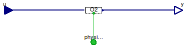

Table of Contents
- User's Guide
- Blocks
- Conditions
- Assemblies
- Regions
- Subregions
- Connectors
- Characteristics
- Units
- Quantities
- BaseClasses
Download
- Latest: FCSys-2.0.zip (**Please check back soon or contact kdavies4 at gmail.com.)

All of the submodels for the individual species in
Gas,
Graphite,
Ionomer, and
Liquid models
are instances of the Conditions.ByConnector.Chemical.Species
model rather than Conditions.ByConnector.Chemical.Reaction).
That means that the subconnectors in the
(chemical connectors of the models in this package are
ChemicalOutput connectors
(rather than ChemicalInput).
Extends from Modelica.Icons.Package (Icon for standard packages).
| Name | Description |
|---|---|
| PhysicalBus | Conditions for a PhysicalBus connector |

| Type | Name | Default | Description |
|---|---|---|---|
| Species | |||
| Boolean | 'inclC+' | false | Carbon plus (C+) |
| Potential | 'C+' | redeclare Physical.Potential… | Model |
| Boolean | 'inclC19HF37O5S-' | false | Nafion sulfonate (C19HF37O5S-) |
| Potential | 'C19HF37O5S-' | redeclare Physical.Potential… | Model |
| Boolean | 'incle-' | false | Electrons (e-) |
| Potential | 'e-' | redeclare Physical.Potential… | Model |
| Boolean | 'inclH+' | false | Protons (H+) |
| Potential | 'H+' | redeclare Physical.Potential… | Model |
| Boolean | inclH2 | false | Hydrogen (H2) |
| Potential | H2 | redeclare Physical.Potential… | Model |
| Boolean | inclH2O | false | Water (H2O) |
| Potential | H2O | redeclare Physical.Potential… | Model |
| Boolean | inclN2 | false | Nitrogen (N2) |
| Potential | N2 | redeclare Physical.Potential… | Model |
| Boolean | inclO2 | false | Oxygen (O2) |
| Potential | O2 | redeclare Physical.Potential… | Model |
| Assumptions | |||
| Axes with translational momentum included | |||
| Boolean | inclTransX | true | X |
| Boolean | inclTransY | true | Y |
| Boolean | inclTransZ | true | Z |
| Type | Name | Description |
|---|---|---|
| PhysicalBus | physical | Bus of multiple species |
| RealInputBus | u | Bus of inputs to specify conditions |
| RealOutputBus | y | Bus of measurement outputs |
model PhysicalBus "Conditions for a PhysicalBus connector" extends FCSys.BaseClasses.Icons.Conditions.Single; // Conditionally include species. parameter Boolean 'inclC+'=false "Carbon plus (C+)"; replaceable Physical.Potential 'C+'( final inclTransX=inclTransX, final inclTransY=inclTransY, final inclTransZ=inclTransZ, final formula="C+") if 'inclC+' "Model"; parameter Boolean 'inclC19HF37O5S-'=false "Nafion sulfonate (C19HF37O5S-)"; replaceable Physical.Potential 'C19HF37O5S-'( final inclTransX=inclTransX, final inclTransY=inclTransY, final inclTransZ=inclTransZ, final formula="inclC19HF37O5S-") if 'inclC19HF37O5S-' "Model"; parameter Boolean 'incle-'=false "Electrons (e-)"; replaceable Physical.Potential 'e-'( final inclTransX=inclTransX, final inclTransY=inclTransY, final inclTransZ=inclTransZ, final formula="e-") if 'incle-' "Model"; parameter Boolean 'inclH+'=false "Protons (H+)"; replaceable Physical.Potential 'H+'( final inclTransX=inclTransX, final inclTransY=inclTransY, final inclTransZ=inclTransZ, final formula="H+") if 'inclH+' "Model"; parameter Boolean inclH2=false "Hydrogen (H2)"; replaceable Physical.Potential H2( final inclTransX=inclTransX, final inclTransY=inclTransY, final inclTransZ=inclTransZ, final formula="H2") if inclH2 "Model"; parameter Boolean inclH2O=false "Water (H2O)"; replaceable Physical.Potential H2O( final inclTransX=inclTransX, final inclTransY=inclTransY, final inclTransZ=inclTransZ, final formula="H2O") if inclH2O "Model"; parameter Boolean inclN2=false "Nitrogen (N2)"; replaceable Physical.Potential N2( final inclTransX=inclTransX, final inclTransY=inclTransY, final inclTransZ=inclTransZ, final formula="N2") if inclN2 "Model"; parameter Boolean inclO2=false "Oxygen (O2)"; replaceable Physical.Potential O2( final inclTransX=inclTransX, final inclTransY=inclTransY, final inclTransZ=inclTransZ, final formula="O2") if inclO2 "Model"; // Assumptions parameter Boolean inclTransX=true "X"; parameter Boolean inclTransY=true "Y"; parameter Boolean inclTransZ=true "Z"; Connectors.PhysicalBus physical "Bus of multiple species"; Connectors.RealInputBus u "Bus of inputs to specify conditions"; Connectors.RealOutputBus y "Bus of measurement outputs"; equation // Note: It would be helpful if Modelica allowed elements of expandable // connectors to be named by the contents of a string variable and the // name of an instance of a model was accessible through a string (like // %name is expanded to be the name of the instance of the model). Then, // the connection equations that follow could be generic. // C+ connect('C+'.physical, physical.'C+'); connect(u.'C+', 'C+'.u); connect('C+'.y, y.'C+'); // C19HF37O5S- connect('C19HF37O5S-'.physical, physical.'C19HF37O5S-'); connect(u.'C19HF37O5S-', 'C19HF37O5S-'.u); connect('C19HF37O5S-'.y, y.'C19HF37O5S-'); // e- connect('e-'.physical, physical.'e-'); connect(u.'e-', 'e-'.u); connect('e-'.y, y.'e-'); // H+ connect('H+'.physical, physical.'H+'); connect(u.'H+', 'H+'.u); connect('H+'.y, y.'H+'); // H2 connect(H2.physical, physical.H2); connect(u.H2, H2.u); connect(H2.y, y.H2); // H2O connect(H2O.physical, physical.H2O); connect(u.H2O, H2O.u); connect(H2O.y, y.H2O); // N2 connect(N2.physical, physical.N2); connect(u.N2, N2.u); connect(N2.y, y.N2); // O2 connect(O2.physical, physical.O2); connect(u.O2, O2.u); connect(O2.y, y.O2); end PhysicalBus;